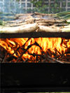
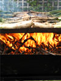
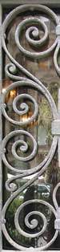

I've been wanting to combine a love of both art and architecture. On our last trip to Barcelona, I took a bunch of pictures that I used as the foundation for a new series of postcards and notecards. There are closeups of beautiful mosaics and pottery, full shots of architectural treasures, and candid photos of traditional cultural events. I hope you'll enjoy them.
You can begin browsing the catalog with the ceramics postcards.
Or you can click on one of the images below to go directly to that set of postcards.
© Copyright 2004. All Rights Reserved. Sarah's Notecards, Inc.
